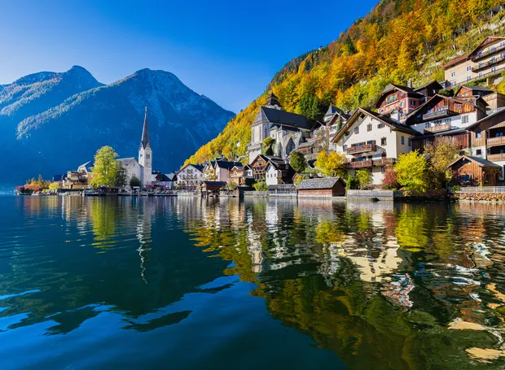
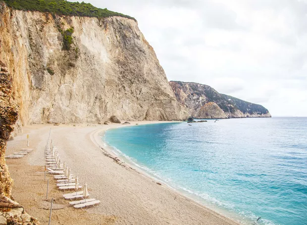

Pequena e encantadora, Hallstatt é famosa por suas casinhas rústicas espremidas entre o lago Hallstatter See e as montanhas. A vila está na lista de patrimônios mundiais da UNESCO desde 1997 e é um lugar de muita história e minas de sal!

A sensação é de estar na idade média, talvez porque a cidade foi cidade construída em 1128. Em Bruges é possível passear de barco e assim chegar às cidades vizinhas. Muito charmosa!
Fonte Informação